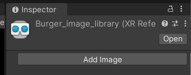
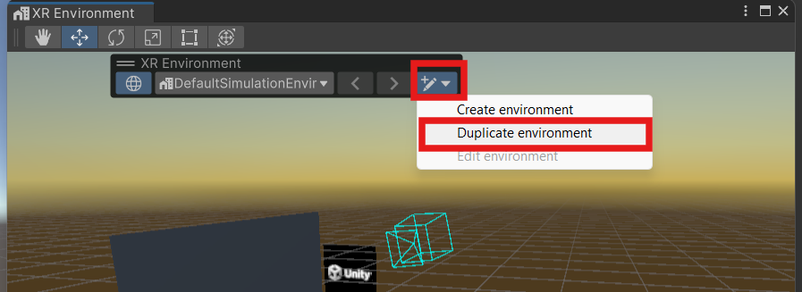
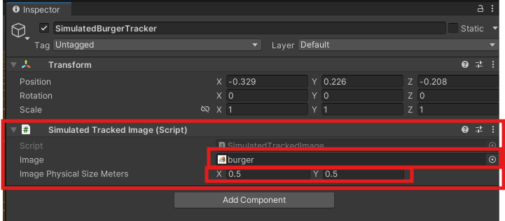
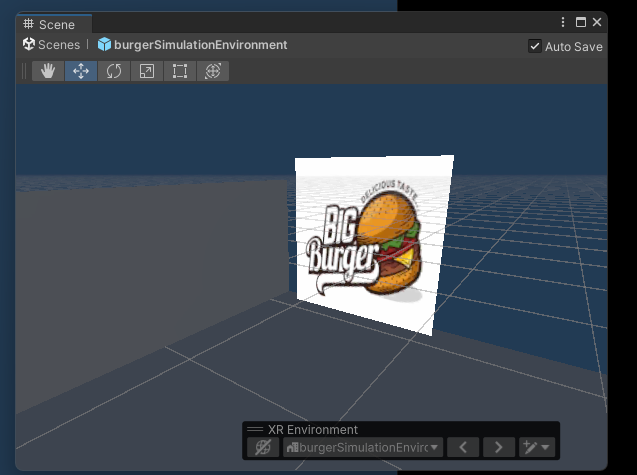
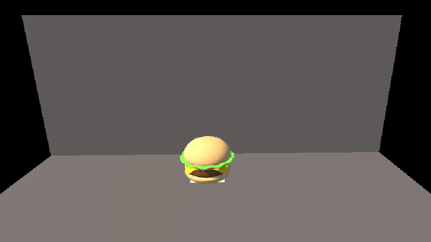

This Worksheet will guide you through creating a Augmented reality(AR) tracked image Unity project
The screen shot were created on a PC using Unity version 2022.3.20f1, they may look slightly different on a Mac but as long as you have a similar version of Unity the functionality is the same.
if you get stuck please ask for help.

The project has a lot of dependencies so may take a while to load the first time.
We will be deploying our project to an Android tablet, so need to change the target platform, it is best to do this now before we start.
In the top menu go to File > Build settings
Choose Android and Switch settings

AR core is only supported on more recent versions of Android, so we need to set the minimum version.

First we are going to create a brand new scene
In the top menu go to File > New Scene
Choose AR and press Create
We could have set this up ourselves manualy but using teh AR template saves us time.
The two main things an AR scene needs are an XR origin and XR Session
Our first project is to get a 3D object to appear on an image in the real world. The image could be on your business card or on a poster, product packaging or billboard, anywhere you can put an image and point your camera at it.
Our project needs to look out for our marker image.

You should see that this component needs a Serialized Library, which is just a list which contains the marker images we want to track and Tracked Image Prefab which is the 3D object we want to appear when the camera sees our marker image.
We will first get our marker image.
I have given you a tracker image you can download here:
When you create you own, Unity gives the following advise:
Size must be at least 300 x 300 pixels.
Format must be PNG or JPG.
Image can be black and white or colour but must have strong contrast.
Image should avoid repeated patterns.
Add the image to your project by dragging it into the Assets folder.
We will now create a Reference Image library to store our image.
Right click in the Assets panel and choose Create > XR > Reference Image Library
Rename you new library ( I called mine "burger_image_library"
Select the new library and press Add Image in the inspector

Press Select and choose your burger image, or just drag it in from your assets.
Make sure you turn on Keep Texture at Runtime

We want to display a 3D model on the tracker, the model can be as complex as you like, with animations and scripts attached, but for this worksheet we will keep it simple.
Download the model of a burger here:
Now we have our image library and prefab we can add them to our tracked image manager.
Select the XR Origin (AR Rig) in the Hierarchy.
Drag the burger 3d model on to the Tracked Image Prefab slot.
Drag the image library onto the Serialized Library slot.

To avoid having to build this project to an actual device every time we want to test it we will create a simulated environment in Unity. This will take time to build, but will save us a considerable amount of time when testing our app.
On the top menu select window > XR > AR Foundation > XR Environment
Duplicate the default default environment and save it in your assets folder.

This is our simulated real world.
The Camera in this environment is the camera on your mobile device.
You should see a black square with the Unity logo on it, this represents your physical tracker in the real world.
The simulated environment already has a tracked image in it with the Unity Logo on it, We want to create our own with our burger image.


The tracker will now be recognised in the simulation, but we want to add the image to make it look correct.

We now need to add the tracked image to the quad as a material.



Now that we have a simulated environment with a simulated tracked image in it we can test our scene.
Press the play button
Navigate around your scene you should see the 3D burger appear on the marker.

Make sure the burger sits centrally on the marker.
This simulated environment allows you to test without having to build your scene to a proper device. You can add props such as tables and chairs to make it look more like a real room, then position your tracker image appropriately in the environment, this can help to make sure you have the scale correct.
However, we are happy that the burger appears so will now test on a real device.
Now that we have successfully tested our project in the simulated environment we can try it on a real device.
As this process with be the same every time you build to android I have made a seperate guide showing you how to do it.
We are expecting the burger 3D model to appear on our burger tracker image.
You can just use an image on your screen but printing it out will give you a better result.
You should see a the burger model appear on your screen locked to the tracking image.
Try moving the device and tracking object around and see how it responds.
Now that we have completed a basic AR project we can take it further in a few ways.
Replace the burger with a different 3D object, choose something with an animation.
Add a script to detect when a marker is found.
This script will listen for new tracked images and place and place a 3D prefab model on to them. you could extend it to check the name of the tracked image and place a different prefab.
using UnityEngine;
using UnityEngine.XR.ARFoundation;
public class MyTrackedImages : MonoBehaviour
{
private ARTrackedImageManager m_TrackedImageManager;
[SerializeField]
public GameObject myPrefab ;
void OnEnable() => m_TrackedImageManager.trackedImagesChanged += OnChanged;
void OnDisable() => m_TrackedImageManager.trackedImagesChanged -= OnChanged;
/**
** Detect when tracked images change
**/
void OnChanged(ARTrackedImagesChangedEventArgs eventArgs)
{
foreach (var newImage in eventArgs.added)
{
// Handle added event
Debug.Log(newImage.referenceImage.name);
// check name of tracked image
if( newImage.referenceImage.name == "tracked image name"){
// create a copy of my prefab at the location of the tracked image
Instantiate(myPrefab, newImage.transform);
}
}
foreach (var updatedImage in eventArgs.updated)
{
// Handle updated event
}
foreach (var removedImage in eventArgs.removed)
{
// Handle removed event
}
}
}
{kind=link}